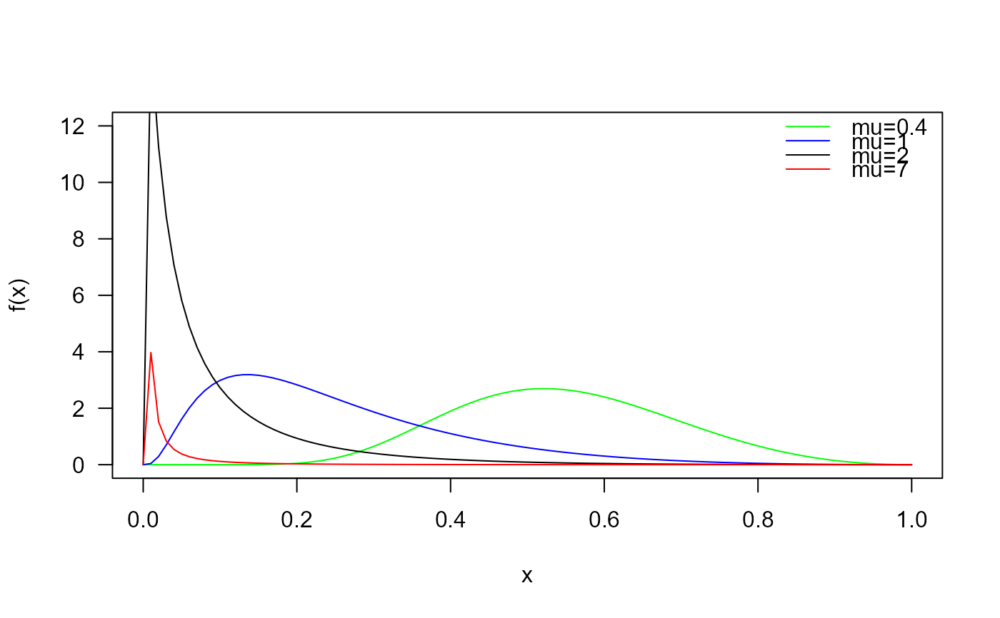
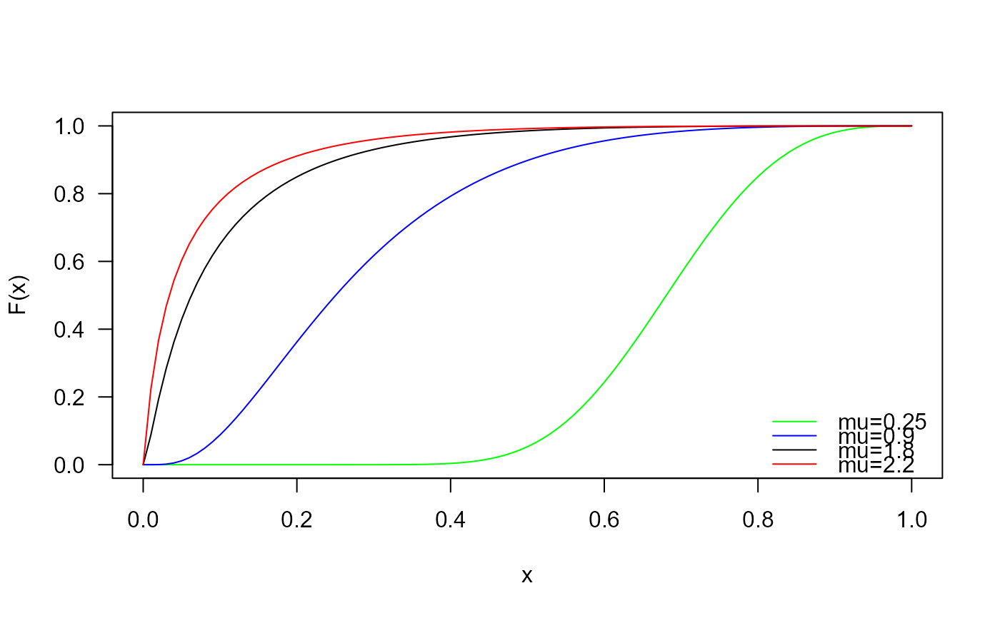
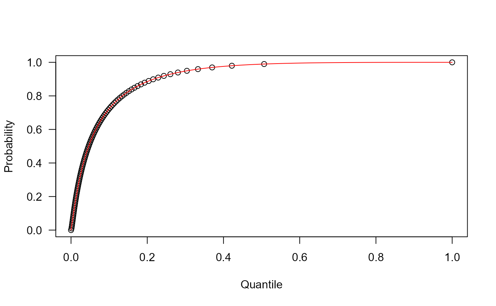
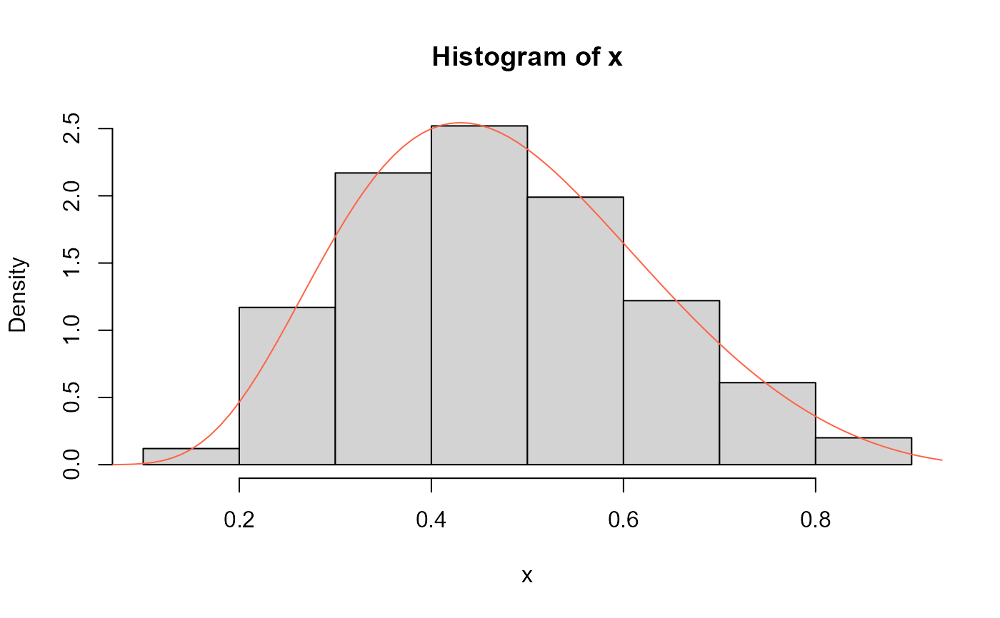

These functions define the density, distribution function, quantile function and random generation for the Unit Maxwell-Boltzmann distribution with parameter \(\mu\).
dUMB(x, mu = 1, log = FALSE)
pUMB(q, mu = 1, lower.tail = TRUE, log.p = FALSE)
qUMB(p, mu, lower.tail = TRUE, log.p = FALSE)
rUMB(n = 1, mu = 1)vector of (non-negative integer) quantiles.
vector of the mu parameter.
logical; if TRUE, probabilities p are given as log(p).
logical; if TRUE (default), probabilities are \(P[X <= x]\), otherwise, \(P[X > x]\).
vector of probabilities.
number of random values to return.
The Unit Maxwell-Boltzmann distribution with parameter \(\mu\) has a support in \((0, 1)\) and density given by
\(f(x| \mu) = \frac{\sqrt(2/\pi) \log^2(1/x) \exp(-\frac{\log^2(1/x)}{2\mu^2})}{\mu^3 x} \)
for \(0 < x < 1\) and \(\mu > 0\).
Biçer, C., Bakouch, H. S., Biçer, H. D., Alomair, G., Hussain, T., y Almohisen, A. (2024). Unit Maxwell-Boltzmann Distribution and Its Application to Concentrations Pollutant Data. Axioms, 13(4), 226.
UMB.
# Example 1
# Plotting the density function for different parameter values
curve(dUMB(x, mu=0.4), from=0, to=1,
ylim=c(0, 12),
col="green", las=1, ylab="f(x)")
curve(dUMB(x, mu=1),
add=TRUE, col="blue1")
curve(dUMB(x, mu=2),
add=TRUE, col="black")
curve(dUMB(x, mu=7),
add=TRUE, col="red")
legend("topright",
col=c("green", "blue1", "black", "red"),
lty=1, bty="n",
legend=c("mu=0.4",
"mu=1",
"mu=2",
"mu=7"))

# Example 2
# Checking if the cumulative curves converge to 1
curve(pUMB(x, mu=0.25),
from=0, to=1, col="green", las=1, ylab="F(x)")
curve(pUMB(x, mu=0.9),
add=TRUE, col="blue1")
curve(pUMB(x, mu=1.8),
add=TRUE, col="black")
curve(pUMB(x, mu=2.2),
add=TRUE, col="red")
legend("bottomright", col=c("green", "blue1", "black", "red"),
lty=1, bty="n",
legend=c("mu=0.25",
"mu=0.9",
"mu=1.8",
"mu=2.2"))

# Example 3
# Checking the quantile function
mu <- 2
p <- seq(from=0, to=1, length.out=100)
plot(x=qUMB(p, mu=mu), y=p,
xlab="Quantile", las=1, ylab="Probability")
curve(pUMB(x, mu=mu), add=TRUE, col="red")

# Example 4
# Comparing the random generator output with
# the theoretical density
x <- rUMB(n=1000, mu=0.5)
hist(x, freq=FALSE)
curve(dUMB(x, mu=0.5),
col="tomato", add=TRUE, from=0, to=1)
